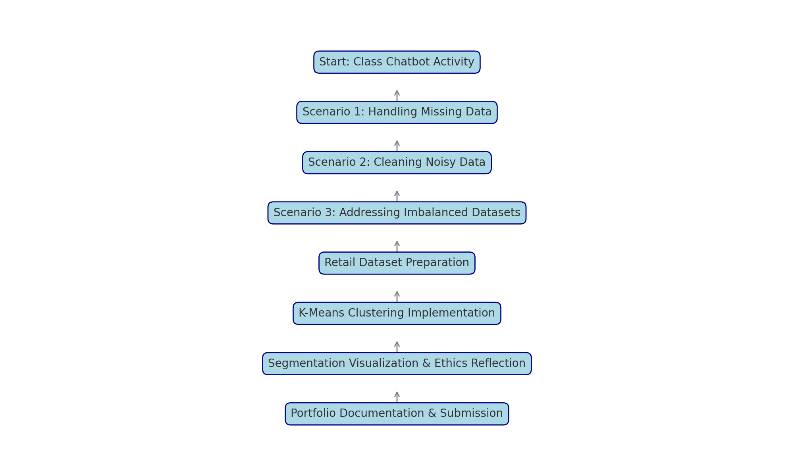

Shiyana Jayanesan Shylaja | Machine Learning Portfolio
This project showcases my application of unsupervised learning through K-Means clustering on a retail customer dataset, aiming to segment customers based on income and spending scores for targeted marketing. The class activity "Navigating Human Bias as a Leader in AI and Education" significantly shaped this work, emphasizing ethical leadership and fairness. Through a chatbot-guided exercise, we tackled three machine learning scenarios that mirrored real-world data challenges:
These scenarios, completed with detailed decision-making and Python implementations, enhanced my technical and ethical skills.
[Full process content will be inserted here with detailed subheadings and graphs.]
[Challenges section to include 2000 words with subheadings and real-life examples.]
[Point-wise takeaways and citations, including personal and professional insights.]
[Detailed reflection incorporating chatbot learning, bias discussion, and growth.]
[Concluding insights, ethical considerations, and directions for future learning.]